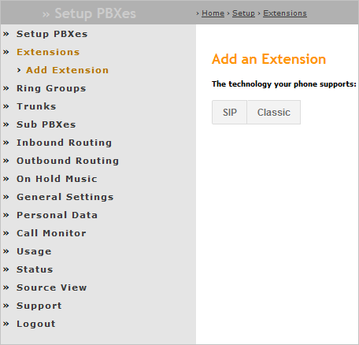

Table of Contents
Laborator 09. Gestiunea Apelurilor Telefonice folosind SIP & VoIP
SIP (Session Initiation Protocol)
SIP (Session Initiation Protocol) este un protocol de nivel aplicație, definit de RFC 3261, folosit împreună cu alte protocoale pentru a gestiona sesiunile de comunicație multimedia la nivelul Internetului. Este frecvent folosit în cadrul tehnologiei VoIP, una dintre cele mai ieftine, portabile, flexibile și facile soluții pentru transmiterea de conțiunut audio și video prin intermediul rețelei de calculatoare. Singura cerință impusă pentru folosirea tehnologiei VoIP este existența unei legături la Internet.
Prin intermediul SIP sunt gestionate sesiuni care reprezintă o legătură punct la punct, un canal de comunicație între două entități. Este încorporat în HTTP și SMTP, de la care a preluat arhitectura client-server, respectiv schemelor de codificare ale mesajelor, împărțite în antet și corp. SIP folosește SDP (Session Decription Protocol) pentru a califica o sesiune (unicast sau multicast) și RTP (Real Time Transport Protocol) pentru a transmite conținutul multimedia prin intermediul Internetului.
În cadrul infrastructurii de comunicație, fiecare element este identificat prin intermediul unui URI (Uniform Resource Identifier), având un rol determinat:
- agent utilizator (eng. user agent) reprezintă o entitate care comunică (telefon mobil, tabletă, calculator): aceasta poate porni sau opri o sesiune și de asemenea poate opera modificări asupra ei; poate fi de mai multe tipuri:
- UAC (User Agent Client) - entitatea care trimite cererea și primește răspunsul;
- UAS (User Agent Service) - entutatea care primește cererea și trimite răspunsul;
- agent intermediar (eng. proxy server) reprezintă un element din cadrul rețelei de calculatoare care retransmite mesajul între agenți; acesta poate înțelege conținutul mesajului, pe baza căruia decide pe ce rută să îl ghideze; numărul de astfel de elemente între doi agenți utilizatori este de maximum 70; poate fi de mai multe tipuri:
- cu stare (eng. stateful) - reține informații despre mesajele pe care le-a prelucrat și le poate folosi (în situația în care nu se primește nici un răspuns sau în situația în care mesajul ajunge încă o dată sub aceeași formă);
- fără stare (eng. stateless) - nu reține informații despre mesajele pe care le-a prelucrat;
- serverul de înregistrare (eng. registrar server) reține URI-uri despre entități pe care le stochează într-o bază de date și pe care le partajează cu alte servere de înregistrare din cadrul aceluiași domeniu; prin intermediul său, agenții utilizatori se autentifică în cadrul rețelei de calculatoare;
- serverul de redirectare (eng. redirect server) verifică baza de date cu locații, transmițând un răspuns către agentul utilizator;
- serverul de localizare (eng. location server) oferă informații cu privire la plasarea posibilă a agentului utilizator către serverele intermediare sau serverele de redirectare (doar acestea îl pot accesa)
Un flux operațional standard al unei sesiuni SIP implică următoarele operații:
- tranzacția 1:
- un agent utilizator (sursă) trimite o cerere de tip
INVITEcătre un agent intermediar în scopul de a contacta un alt agent utilizator (destinație); - agentul intermediar
- trimite înapoi (imediat) un răspuns de tip
100 Tryingcătre agentul utilizator sursă (pentru ca acesta să nu mai transmită nimic); - caută agentul utilizator destinație folosind un server locație și îi trimite (mai departe) cererea de tip
INVITE;
- agentul utilizator destinație transmite, prin intermediul agentului intermediar, un răspuns de tipul
180 Ringing, către agentul utilizator sursă;
- tranzacția 2: în momentul în care agentul utilizator destinație este contactat, acesta transmite, tot prin intermediul agentului intermediar, un răspuns de tipul
200 OK, către agentul utilizator sursă și, din acest moment, conexiunea este realizată, transmițându-se pachete RTP în ambele sensuri; - tranzacțoa 3: orice participant poate transmite un mesaj de tipul
200 BYEpentru a termina legătura, fiind necesar ca acesta să fie confirmat prin200 OKde către cealaltă parte.
Se observă faptul că o sesiune de comunicare este împărțită în mai multe tranzacții care împreună alcătuiesc un dialog.
Mesajele în protocolul SIP sunt de două tipuri:
- cereri au forma
<METODĂ> <URI>unde metodele pot fi:- de bază
INVITEreprezintă o cerere pentru deschiderea unei sesiuni cu un agent utilizator, putând conține informații de tip multimedia în corpul său; aceasta este considerată că a fost îndeplinită cu succes dacă s-a primit un cod de răspuns de tipul2xxsau s-a transmis unACK; un dialog stabilit între doi agenți utilizatori continuă până în momentul în care se transmite un mesaj de tipulBYE;BYEeste metoda folosită pentru a închide o sesiune cu un agent utilizator, putând fi trimisă de oricare dintre entitățile din canalul de comunicație, fără a trece prin serverul de înregistrare;REGISTERindică o cerere de înregistrare a unui agent utilizator către un server de înregistrare; un astfel de mesaj este transmis mai departe până ajunge la o entitate care deține autoritatea de a realiza această operație; o înregistrare poate fi realizată de un agent utilizator în numele altui agent utilizator (eng. third party registration);CANCELeste operația folosită pentru a închide o sesiune care nu a fost încă deschisă, putând fi transmisă fie de către un agent utilizator fie de către un agent intermediar;ACKeste folosit pentru a confirma o cerere de tipINVITE;OPTIONSeste utilizat pentru a interoga un agent utilizator sau un server intermediar despre capabilitățile sale și pentru a determina disponibilitatea sa, rezultatul fiind o listă a funcționalităților entitpții respective;
- extensii:
SUBSCRIBE,NOTIFY,REFER,INFO,UPDATE,PRACK,MESSAGE;
- răspunsuri reprezintă un mesaj generat de un agent utilizator de tip server sau de un server SIP în replică la o cerere provenită de la un agent utilizator de tip client; acesta poate reprezenta inclusiv o confirmare formală pentru a preveni retransmisiile; există mai multe tipuri de coduri de răspuns:
| CLASA | TIP | DESCRIERE | ACȚIUNE |
|---|---|---|---|
| 1xx | Provizoriu | Informație | Se precizează starea unui apel înainte ca un rezultat să fie disponibil. |
| 2xx | Definitiv | Succes | Cererea a fost procesată cu succes. Pentru cereri de tip INVITE se întoarce ACK. Pentru alte tipuri cereri, se oprește retransmiterea acestora. |
| 3xx | Redirectare | Se indică faptul că au fost furnizate mai multe locații posibile astfel încât ar trebui interogat un alt server pentru a se putea obține informația necesară. | |
| 4xx | Eroare la Client | Cererea nu a fost procesată cu succes datorită unei erori la client, fiind necesar ca aceasta să fie reformulată. | |
| 5xx | Eroare la Server | Cererea nu a fost procesată cu succes datorită unei erori la server, putând fi retransmisă către o altă entitate. | |
| 6xx | Eroare Globală | Cererea a eșuat și nu există nici o șansă de a fi procesată corect pe o altă entitate, nici măcar dacă este reformulată. |
Exemple:
100 Trying,180 Ringing,181 Call is Being Forwarded,182 Call Queue,183 Session Progress;200 OK,202 Accepted;300 Multiple Choices,301 Moved Permanently,302 Moved Temporarily,305 Use Proxy,380 Alternative Service;400 Bad Request,401 Unauthorized,403 Forbidden,404 Not Found,405 Method Not Allowed,406 Not Acceptable,407 Proxy Authentication Required,408 Request Timeout,422 Session Timer Interval Too Small,423 Interval Too Brief,480 Temporarily Unavailable,481 Dialog/Transaction Does Not Exist,483 Too Many Hops,486 Busy Here,487 Request Terminated;500 Server Internal Error,501 Not Implemented,502 Bad Gateway,503 Service Unavailable,504 Gateway Timeout,505 Version Not Supported,513 Message Too Large,580 Preconditions Failure;600 Busy Everywhere,603 Decline,604 Does Not Exist Anywhere,606 Not Acceptable.
Configurare
Se va utiliza, la alegere, un furnizor (gratuit) de servicii SIP, accesibil ulterior înregistrării (creării unui cont):
- GetOnSIP - are avantajul implementării serviciului WebRTC (proiect open-source - susținut de consorțiul World Wide Web (W3C) - ce pune la dispoziție un API pentru realizarea de apeluri de voce / multimedia, conversații și partajare de fișiere printr-o conexiune punct la punct între dispozitive mobile (IoT) și aplicații de tip navigator), dar dezavantajul limitării numărului de accesări într-o oră;
GetOnSIP
Pentru obținerea unui cont SIP gratuit, folosind serviciul GetOnSIP, este necesar să se furnizeze o adresă de poștă electronică, urmată de apăsarea butonului Submit.

La adresa de poștă furnizată va fi transmisă o legătură Internet, la accesarea căreia utilizatorul va fi redirectat către o pagină în care va putea finaliza procesul de înscriere, prin precizarea următoarelor informații:
- un nume asociat contului respectiv;
- denumirea contului (sufixată cu
@getonsip.com); - o parolă introdusă de două ori spre a fi verificată.

În urma realizării cu succes a contului SIP gratuit, acesta va putea fi accesat, inclusiv prin interfața web, prin furnizarea denumirii contului și a parolei specificate anterior:


Pentru a putea utiliza serviciile SIP și VoIP prin interfața web, este necesar ca aplicația navigator să obțină acces la resursele hardware ale sistemului pe care îl utilizează:
- camera web;
- microfonul.
Secțiunea View Profile este foarte importantă, întrucât acolo sunt furnizate informațiile necesare pentru utilizarea contului SIP din contextul altor dispozitive:
- adresa SIP;
- numele de utilizator;
- domeniul;
- parola SIP → atenție!!! această valoare este autogenerată și este diferită de parola furnizată la înregistrare;
- numele de utilizator furnizat pentru autentificare → atenție!!! valoarea acestui identificator este diferită de numele de utilizator furnizat la înregistrare (de regulă, este prefixat cu șirul de caractere
getonsip_); - proxy-ul folosit pentru conexiuni din afara domeniului.
PBXes
Pentru obținerea unui cont SIP gratuit, folosind serviciul PBXes, este necesar se accesează legătura Internet Create your account.

Este necesar să se furnizeze mai multe informații, legate de:
- limba folosită pentru afișarea interfeței grafice în cadrul paginii Internet;
- contul propriu-zis (denumire - limitată la maximum 15 caractere!!! și parolă - nu sunt permise caracterele speciale);
- date personale (nume / prenume, adresă - inclusiv oraș și cod poștal -, zona de timp, data nașterii, numărul de telefon, adresa de poștă electronică);
- versiunea aplicației;
- permisiunea de a permite unor moderatori independenți de a inspecta datele de configurare și fișierele de jurnalizare spre a putea oferi suport.
Ulterior înregistrării cu succes, se furnizează adresa care poate fi folosită pentru accesarea serviciilor SIP și VoIP (de regulă, numele de utilizator furnizat în cadrul înregistrării, la care se adaugă @pbxes.org).
Pentru utilizarea propriu-zisă a serviciului, este necesară definirea unei extensii (Extensions → Add Extension) de tipul SIP:

Este necesar să se furnizeze informații legate de:
- extensia propriu-zisă (număr de extensie și denumire);
- date pentru apelul prin Internet (URL, text, GPS - latitudine și longitudine și, opțional, o imagine);
- parola specifică (va fi utilizată în locul parolei furnizată pentru cont).
Utilizare pe Dispozitivul Mobil
Adrese SIP pentru Testare
Un contact de tip SIP poate fi realizat folosind aplicația nativă Contacts, folosind, în mod obișnuit, opțiunea Create a New Contact.


Adresa SIP la care se plasează apelul telefonic VoIP va fi plasată în secțiunea Internet call sau SIP (dacă nu este vizibilă, se poate specifica un alt timp de câmp specific contactului prin opțiunea Add another field).

Pot fi folosite următoarele adrese de test:
thetestcall@getonsip.com;904@mouselike.org;301@ideasip.com;
În agenda telefonică, contactul respectiv va fi identificat printr-o pictogramă specifică (indicând faptul că acesta este de tip SIP), fiind apelat în mod implicit folosind protocolul respectiv.

Implementarea Nativă din Sistemul de Operare Android
Începând cu versiunea 2.3 (Gingerbread, API level 9), în kernelul Android a fost implementat protocolul SIP, acesta putând fi accesat în aplicația Phone, secțiunea Settings → Internet Calling → Accounts (sau Settings → Calls → Calling Accounts → SIP Accounts) și utilizat exclusiv pentru apeluri de voce. Totuși, nu sunt încă implementate toate funcționalitățile specifice (apeluri video, mesagerie instantanee).
Se accesează aplicația Phone și din meniul acesteia intrarea Settings.

Se parcurg următoarele ecrane Calls → Calling Accounts → SIP Accounts:


Definirea unui cont de tip SIP se realizează prin accesarea opțiunii Add Account:

Informațiile care trebuie specificate sunt:
- numele de utilizator;
- parola;
- adresa serverului care oferă serviciile SIP;
- contul folosit pentru autentificare;
- adresa proxy pentru accesări din afara domeniului;
- portul pe care se realizează comunicația;
- protocolul folosit pentru transport (TCP / UDP);
- transmiterea de mesaje de tip keep-alive.

În situația în care contul SIP a fost creat, acesta va fi vizualizat în secțiunea SIP Accounts împreună cu starea sa (Receiving calls, Not receiving calls).

De asemenea, în secțiunea Calling accounts există posibilitatea de a preciza ce cont este folosit în mod implicit pentru realizarea de apeluri telefonice. Se recomandă selectarea opțiunii Ask first astfel încât pentru fiecare contact să se poată preciza mecanismul utilizat pentru plasarea sa.

Prin accesarea unui contact de tip SIP din agenda telefonică, se va utiliza contul specific pentru realizarea apelului telefonic.

Aplicația CSIPSimple
În cazul în care în aplicația Phone, opțiunea Internet Calling / SIP Accounts nu este disponibilă, poate fi utilizată aplicația CSipSimple din Play Store. Ulterior descărcării, utilizatorului îi sunt solicitate acordarea de permisiuni pentru ca această aplicație să poată fi instalată.


Aplicația CSipSimple pune la dispoziția utilizatorilor mai multe șabloane pentru definirea unui cont SIP. Se recomandă să se utilizeze Generic Wizards → Advanced întrucât permite definirea tuturor parametrilor necesari pentru realizarea conexiunii la serverului care găzduiește un astfel de serviciu:


Pentru contul de tip getonsip.com se precizează următorii parametri:
- denumirea contului:
informaticamobila2016@getonsip.com - adresa serverului care pune la dispoziție serviciile SIP:
getonsip.com; - numele de utilizator:
informaticamobila2016 - identificatorul folosit pentru autentificare, de regulă același cu numele de utilizator, prefixat de șirul de caractere
getonsip_:getonsip_informaticamobila2016; - parola (din secțiunea View Profile, nu cea folosită la definirea contului);
- protocoul folosit (implicit UDP);
- proxy-ul folosit pentru conexiuni din afara domeniului:
sip.onsip.com

În secțiunea Accounts, contul SIP poate fi în orice moment activat sau dezactivat. Starea acestuia este vizibilă sub denumirea sa, culoarea folosită fiind sugestivă pentru rezultatul operației de înregistrare:
- verde: operația a fost realizată cu succes;
- roșu: s-a produs o eroare; eroarea de tipul Registration timeout denotă faptul că în NAT/SIP nu se translatează corect adresele interne
- rețeaua Digi.Mobil/4G funcționează corespunzător;
- în facultate, rețelele wireless
ACS-UPB-OPEN,eduroam,Java-ED117nu creează probleme; în schimb, rețeauachangeblochează anumite porturi ceea ce împiedică comunicația cu serverul SIP.

Contactele de tip SIP sunt vizibile în meniul aplicației CSipSimple astfel încât să poată fi plasate apeluri de tip SIP / VoIP:


Pentru contul de tip PBXes există un șablon predefinit:

Se recomandă însă să se utilizeze tot un șablon general, astfel încât să poată fi controlați foarte bine toți parametrii:
- denumirea contului:
mobilecomputing - adresa serverului care pune la dispoziție serviciile SIP:
pbxes.org; - numele de utilizator (se utilizează extensia):
mobilecomputing-100 - identificatorul folosit pentru autentificare, de regulă același cu numele de utilizator;
- parola (se utilizează extensia);
- protocoul folosit (implicit UDP);
- proxy-ul folosit pentru conexiuni din afara domeniului:
pbxes.org

Android NGN Stack
Stiva SIP face parte din SDK-ul Android începând cu versiunea 2.3 (Gingerbread, API level 9), însă nu dispune încă de toate funcționalitățile (mesagerie instantanee, apeluri video). Totuși, poate fi utilizat pentru apeluri audio, funcționalitatea fiind disponibilă în Phone → Settings → Internet Calling (ulterior SIP Accounts).
Se preferă însă utilizarea API-ului NGN (New Generation Networking), care implementează o stivă SIP completă, dispunând și de documentarea metodelor care pot fi utilizate: https://imsdroid.googlecode.com/svn-history/r381/branches/2.0/android-ngn-stack-00.pdf.
Inițial, este necesar să se obțină o referință către obiectul de tip NgnEngine. Acest lucru poate fi realizat prin intermediul metodei statice getInstance() (așa cum era de așteptat, NgnEngine este singleton). De regulă, o astfel de operație este realizată pe metoda onCreate() a activității principale a aplicației Android.
ngnEngine = NgnEngine.getInstance(); if (ngnEngine == null) { Log.i(Constants.TAG, "Failed to obtain the NGN engine!"); }
Motorul NGN trebuie configurat, prin specificarea unor parametri, reținuți sub forma unor perechi de tipul (cheie, valoare). Pentru ca serviciul SIP să poată fi accesat, trebuie specificat identificatorul utilizatorului, adresa SIP (sub forma sip:<username>@<domain>), parola, adresa proxy-ului la care se realizează conexiunea și portul pe care se face acest lucru (frecvent, 5060), rețeaua din care face parte. Pot fi indicate și utilizarea rețelei 3G (implicit, dezactivată) precum și timpul de așteptare în cazul operației de înregistrare.
public void configureStack() { NgnEngine ngnEngine = NgnEngine.getInstance(); INgnConfigurationService ngnConfigurationService = ngnEngine.getConfigurationService(); ngnConfigurationService.putString(NgnConfigurationEntry.IDENTITY_IMPI, Constants.IDENTITY_IMPI); ngnConfigurationService.putString(NgnConfigurationEntry.IDENTITY_IMPU, String.format("sip:%s@%s", Constants.USERNAME, Constants.DOMAIN)); ngnConfigurationService.putString(NgnConfigurationEntry.IDENTITY_PASSWORD, Constants.IDENTITY_PASSWORD); ngnConfigurationService.putString(NgnConfigurationEntry.NETWORK_PCSCF_HOST, Constants.NETWORK_PCSCF_HOST); ngnConfigurationService.putInt(NgnConfigurationEntry.NETWORK_PCSCF_PORT, Constants.NETWORK_PCSCF_PORT); ngnConfigurationService.putString(NgnConfigurationEntry.NETWORK_REALM, Constants.NETWORK_REALM); ngnConfigurationService.putBoolean(NgnConfigurationEntry.NETWORK_USE_3G, true); ngnConfigurationService.putInt(NgnConfigurationEntry.NETWORK_REGISTRATION_TIMEOUT, Constants.NETWORK_REGISTRATION_TIMEOUT); ngnConfigurationService.commit(); }
Ulterior, motorul NGN trebuie să fie pornit.
public boolean startNgnEngine() { if (!ngnEngine.isStarted()) { if (!ngnEngine.start()) { Log.e(Constants.TAG, "Failed to start the NGN engine!"); return false; } } return true; }
Pe baza acestui obiect, se poate obține un serviciu SIP de tipul INgnSipService care pune la dispoziție metodele pentru obținerea de sesiuni pe baza operațiilor de înregistrare / deînregistrare.
ngnSipService = ngnEngine.getSipService();
Operația de înregistrare presupune transmiterea unui context (al aplicației Android) care este asociat serviciului SIP.
public void registerSipService() { if (!ngnSipService.isRegistered()) { ngnSipService.register(this); } }
Pentru operația (simetrică) de deînregistrare, furnizarea unui astfel de argument nu mai este necesară. Utilizatorul este cel care ar trebui să dețină controlul asupra acestui tip de operații, prin intermediul unor elemente din cadrul interfeței grafice.
public void unregisterSipService() { if (ngnSipService.isRegistered()) { ngnSipService.unRegister(); } }
Motorul NGN trebuie să fie oprit atunci când aplicația Android este terminată. De regulă, o astfel de operație este realizată pe metoda onDestroy() a activității principale.
public boolean stopNgnEngine() { if (ngnEngine.isStarted()) { if (!ngnEngine.stop()) { Log.e(Constants.TAG, "Failed to stop the NGN engine!"); return false; } } return true; }
onStart() respectiv onStop() deoarece execuția acestora poate fi destul de îndelungată având un impact negativ asupra responsivității sistemului de operare.
Ulterior, se pot deschide sesiuni audio-video (NgnAVSession) respectiv pentru mesagerie instantanee (NgnMessagingSession), acestea fiind obiecte partajate la nivelul întregii aplicații întrucât furnizează aproximativ toate metodele pentru gestiunea apelurilor telefonice sau pentru transmiterea de mesaje.
NgnAVSession ngnAVSession = NgnAVSession.createOutgoingSession( NgnEngine.getInstance().getSipService().getSipStack(), NgnMediaType.AudioVideo );
NgnMessagingSession instantMessagingSession = NgnMessagingSession.createOutgoingSession( NgnEngine.getInstance().getSipService().getSipStack(), remotePartyUri );
În cazul operațiilor de înregistrare / deînregistrare, se poate defini un ascultător pentru mesaje cu difuzare, care gestionează acțiunile de tipul NgnRegistrationEventArgs.ACTION_REGISTRATION_EVENT.
Evenimentele ce pot fi tratate de un astfel de obiect sunt legate de:
- rezultatul operației de înregistrare:
REGISTRATION_NOKREGISTRATION_OKREGISTRATION_INPROGRESS
- rezultatul operației de deînregistrare:
UNREGISTRATION_NOKUNREGISTRATION_OKUNREGISTRATION_INPROGRESS
Pentru gestiunea apelurilor telefonice se folosesc metodele makeCall(), respectiv hangUpCall(), puse la dispoziție de obiectul INgnAVSession.
- metoda
makeCall()primește ca argument un șir de caractere formatat, reprezentând un URI valid, acesta fiind furnizat prin intermediul metodei staticeNgnUriUtils.makeValidSipUri(); de regulă, se respectă formatul protocol:utilizator@domeniu, în cazul de față protocolul fiind sip; metoda furnizează un rezultat de tip adevărat / fals; - metoda
hangUpCall()nu primește nici un argument și furnizează un rezultat de tip adevărat / fals.
În același scop, se poate defini un ascultător pentru mesaje cu difuzare, care gestionează acțiunile de tipul NgnInviteEventArgs.ACTION_INVITE_EVENT. Evenimentele ce pot fi tratate de un astfel de obiect sunt:
INCOMINGINCALLTERMINATED/TERMINATINGNONE
Pentru gestiunea mesajelor ce se doresc a fi transmise instantaneu se folosește metoda sendTextMessage(), care primește ca argument șirul de caractere care trebuie comunicat. Aceasta furnizează un rezultat de tip adevărat / fals după cum operația a reușit respectiv a eșuat.
În același scop, se poate defini un ascultător pentru mesaje cu difuzare, care gestionează acțiunile de tipul NgnMessagingEventArgs.ACTION_MESSAGING_EVENT. Evenimentele ce pot fi tratate de un astfel de obiect sunt:
INCOMINGOUTGOINGSUCCESSFAILURE
Activitate de Laborator
Se dorește implementarea unei aplicații Android care folosește stiva Android NGN pentru a realiza apeluri de voce precum și comunicație prin mesagerie instantanee folosind SIP.


Proiectul conține două activități:
VoiceCallActivity, folosit pentru operații de tip înregistrare / deînregistrare, apeluri de voce și transmiterea de coduri DTMF;InstantMessagingActivity, utilizat pentru transferul de mesaje instantanee.
1. În contul Github personal, să se creeze un depozit denumit 'Laborator09'. Inițial, acesta trebuie să fie gol (nu trebuie să bifați nici adăugarea unui fișier README.md, nici a fișierului .gitignore sau a a fișierului LICENSE).
2. Să se cloneze în directorul de pe discul local conținutul depozitului la distanță de la https://www.github.com/eim2016/Laborator09.
În urma acestei operații, directorul Laborator09 va trebui să se conțină directoarele labtasks și solutions.
student@eim2016:~$ git clone https://www.github.com/eim2016/Laborator09
3. Să se încarce conținutul descărcat în cadrul depozitului 'Laborator09' de pe contul Github personal.
student@eim2016:~$ cd Laborator09 student@eim2016:~/Laborator09$ git remote add Laborator09_perfectstudent https://github.com/perfectstudent/Laborator09 student@eim2016:~/Laborator09$ git push Laborator09_perfectstudent master
4. Să se importe în mediul integrat de dezvoltare Eclipse proiectul android-ngn-stack, care va fi utilizat ca bibliotecă pentru proiectul ngnsip.
Să se importe în mediul integrat de dezvoltare Eclipse proiectul NgnSIP din directorul labtasks. Acesta trebuie să refere biblioteca android-ngn-stack: Project Properties → Android → Library → Add.

android-ngn-stack să fie referit ca bibliotecă și compilat ca atare, întrucât dacă se construiește o arhivă .jar pe baza sa, aceasta nu va include și bibliotecile partajate (din subdirectorul libs, având extensia .so), astfel încât la încercarea de inițializare a stivei NGN vor fi generate excepții de tipul java.lang.UnsatisfiedLinkError datorate faptului că nu pot fi încărcate bibliotecile partajate folosite.
În interfața Constants.java, să se actualizeaze informațiile specifice contului SIP.
5. În activitatea VoiceCallActivity, să se implementeze ascultători pentru butoanele Register și Unregister:
- Register
- va configura motorul NGN, ai cărui parametri sunt plasați sub forma unor valori asociate unor chei (metoda
configureStack()); - va porni motorul NGN (metoda
startNgnEngine()) și va înregistra activitatea principală la serviciul SIP (metodaregisterSipService())
- Unregister va deînregistra serviciul SIP (metoda
unregisterSipService()).
În ambele cazuri, în situația în care se produce o eroare, aceasta va fi jurnalizată folosind Logcat.
6. Să se activeze / dezactiveze ascultătorul pentru mesaje cu difuzare RegistrationBroadcastReceiver, folosind filtrul NgnRegistrationEventArgs.ACTION_REGISTRATION_EVENT. Acesta prelucrează mesajele legate de operațiile de înregistrare / deînregistrare, pe care le jurnalizează în Logcat, utilizatorul putând să le vizualizeze și în interfața grafică prin intermediul unor ferestre de tip Toast precum și într-un câmp text care conține starea curentă (Registered, Registration in progress, Unregistration in progress, Unregistered, Failed to register, Failed to unregster).
7. În aplicația Android, există un câmp text editabil în care se va preciza adresa SIP destinație, precum și două butoane care pornesc / opresc apelul.
Să se creeaze o sesiune către adresa SIP destinație:
NgnAVSession.createOutgoingSession( NgnEngine.getInstance().getSipService().getSipStack(), NgnMediaType.Audio );
Pe baza acestei sesiuni, să se pornească apelul cu makeCall(), și să se oprească cu hangUpCall().
Să se implementeze metodele specifice, asociate claselor ascultător pentru operația de apăsare a butoanelor Make Call, respectiv Hang up Call.
8. Să se activeze / dezactiveze ascultătorul pentru mesaje cu difuzare CallStateBroadcastReceiver, folosind filtrul NgnInviteEventArgs.ACTION_INVITE_EVENT.
Acesta prelucrează mesajele legate de operațiile legate de apelurile de voce, pe care le jurnalizează în Logcat, utilizatorul putând să le vizualizeze și în interfața grafică prin intermediul unor ferestre de tip Toast precum și într-un câmp text care conține starea curentă (Incoming call, Call started, Call ended, Call state).
9. Să se testeze un apel de voce către o adresă SIP de test (thetestcall@getonsip.com).
Să se analizeze conversația SIP la nivel pachet:
student@eim2016:/opt/android-sdk-linux/platform-tools$ ./adb -s 192.168.56.101:5555 shell
În consola sistemului de operare Android, se folosește utilitarul tcpdump:
root@android:/# ./tcpdump -s0 -ni eth1 -w /sdcard/DCIM/sip.pcap 'udp'
tcpdump se instalează în /data/bin, apoi se conferă drepturi de execuție pentru binar:
root@android:/data/bin# chmod 777 tcpdump
Se pornește apelul audio și după ce se termină mesajul, se oprește.
Programul tcpdump este terminat prin Ctrl-C.
Se obține dump-ul și se analizează folosind wireshark.
student@eim2016:/opt/android-sdk-linux/platform-tools$ ./adb -s 192.168.56.3:5555 pull /sdcard/DCIM/sip.pcap student@eim2016:/opt/android-sdk-linux/platform-tools$ wireshark sip.pcap
- Să se identifice operația
REGISTER. Ce port se utilizează? Care este adresa serverului?

- Să se găsească, în răspunsul de confirmare, adresele NAT prin care trece conversația, odată ce a fost acceptată cererea.

- Să se identifice operația
INVITE. Apar retransmisii?

- Ce fel de codificare este utilizată pentru semnalul audio?

- Ce parametri are fluxul de voce (protocol, dimensiune pachet, rata pachetelor)?
- Ce adrese sunt folosite pentru traficul de voce și cum au fost negociate?

tcpdump) trebuie realizată anterior operației de înregistrare. Similar, oprirea monitorizării trebuie realizată ulterior operației de deînregistrare. În acest fel, pot fi surprinse toate operațiile.
10. (opțional) Pentru a trimite coduri numerice DTMF (Dual Tone Multi Frequency) se creează un buton și un câmp text editabil asociat. Transmiterea unui astfel de caracter se realizează prin intermediul metodei sendDTMF() a obiectului sesiune NgnAVSession cu valorile întregi 0-9, sau 10 pentru * și 11 pentru #. Folosind o adresa de test (thetestcall@getonsip.com sau 904@mouselike.org) să se testeze codurile și navigarea prin meniuri.
Să se implementeze metoda asociată clasei ascultător corespunzătoare operației de apăsare a butonului respectiv.
11. Activitatea InstantMessagingActivity poate fi lansată din activitatea principală, doar ulterior operației de înregistrare. Aceasta primește ca argument, în intenția cu care este lansată în execuție, adresa SIP cu care se va desfașura sesiunea de mesagerie instantanee. Funcționalitatea este împărțită între activitate și ascultătorul pentru mesaje cu difuzare MessageBroadcastReceiver care trebuie să gestioneze evenimentele de tipul NgnMessagingEventArgs.ACTION_MESSAGING_EVENT.
12. Să se încarce modificările realizate în cadrul depozitului 'Laborator09' de pe contul Github personal, folosind un mesaj sugestiv.
student@eim2016:~/Laborator09$ git add * student@eim2016:~/Laborator09$ git commit -m "implemented taks for laboratory 08" student@eim2016:~/Laborator09$ git push Laborator09_perfectstudent master